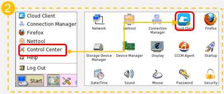
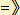
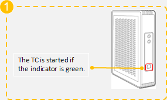
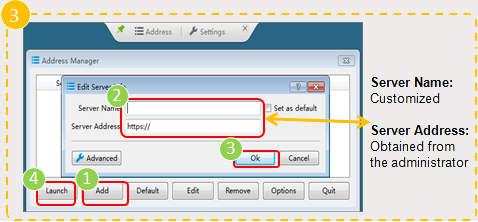

| Using a TC Using a PC(Method one) Using a PC(Method two) |
1. Start the TC at the underside of the TC. 2. Enter the cloud client. 3. Set the cloud server address. 4. On the login page, enter the 5. On the displayed VM list page, click VM to enter the VM desktop. |
 |
 In the upper right corner, choose  to switch to another user or exit from the login page. The screenshots in this slide are only examples. |
|
 |
 |